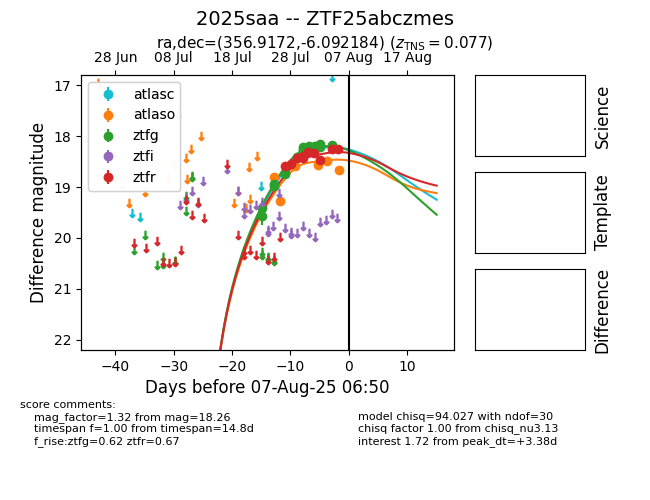

Target 2025saa at 2025-08-07 07:30, see:
FINK: fink-portal.org/2025saa
Lasair: lasair-ztf.lsst.ac.uk/objects/2025saa
ALeRCE: alerce.online/object/2025saa
TNS: wis-tns.org/object/2025saa
YSE: ziggy.ucolick.org/yse/transient_detail/2025saa
alt names
ZTF25abczmes (ztf,fink)
2025saa (tns,yse)
coordinates:
equatorial (ra, dec) = (356.9172,-6.09218)
galactic (l, b) = (84.2819,-64.06855)
photometry
last atlasc=18.23, atlaso=18.66, ztfg=18.19, ztfr=18.26
1 atlasc, 6 atlaso, 17 ztfg, 10 ztfr detections
